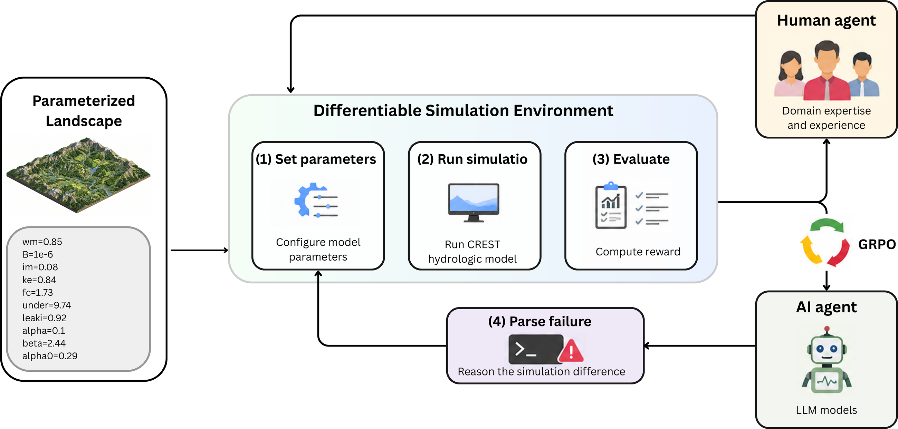
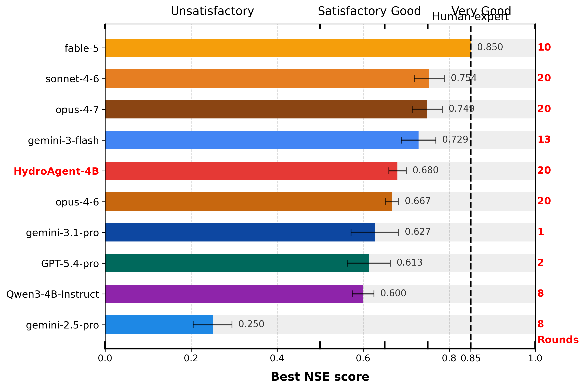
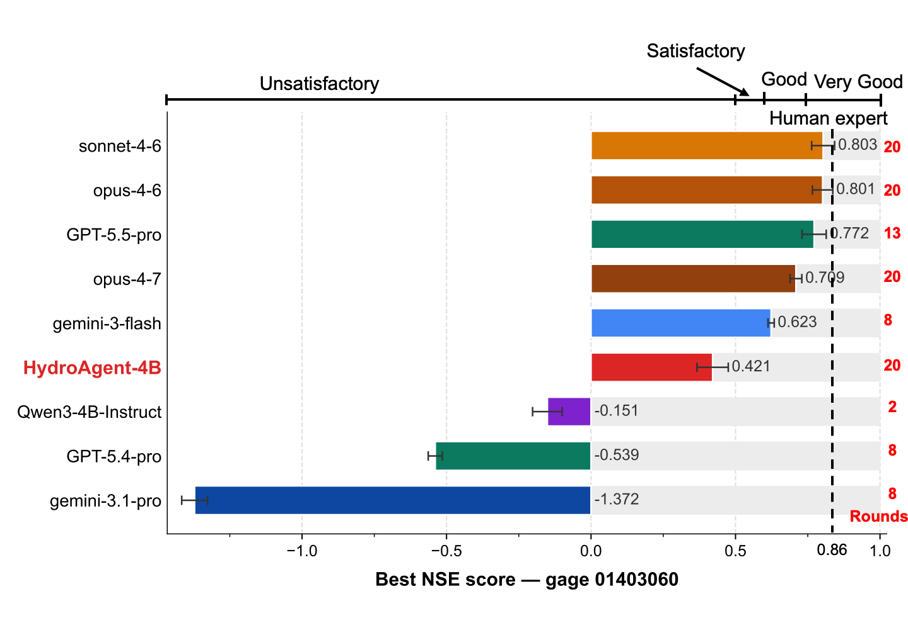
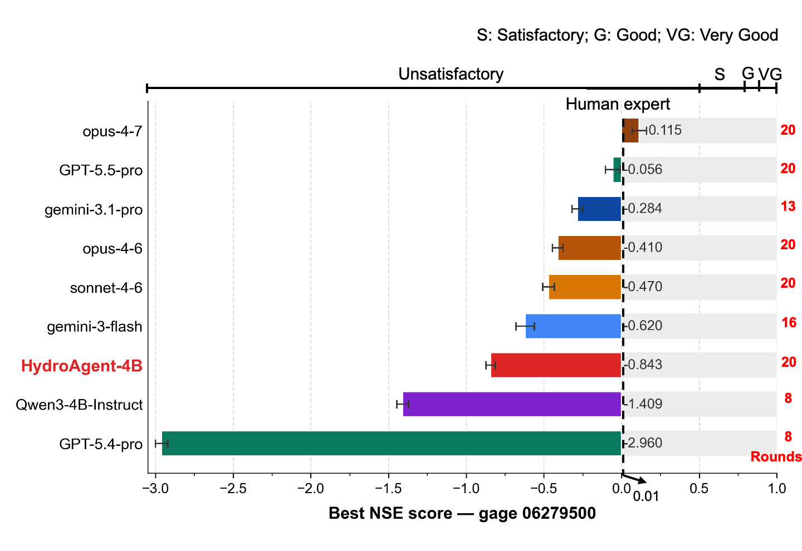
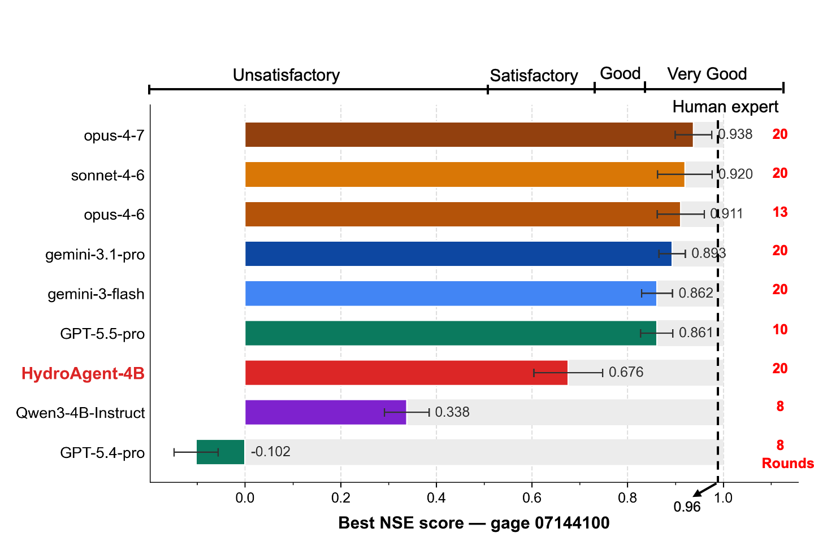
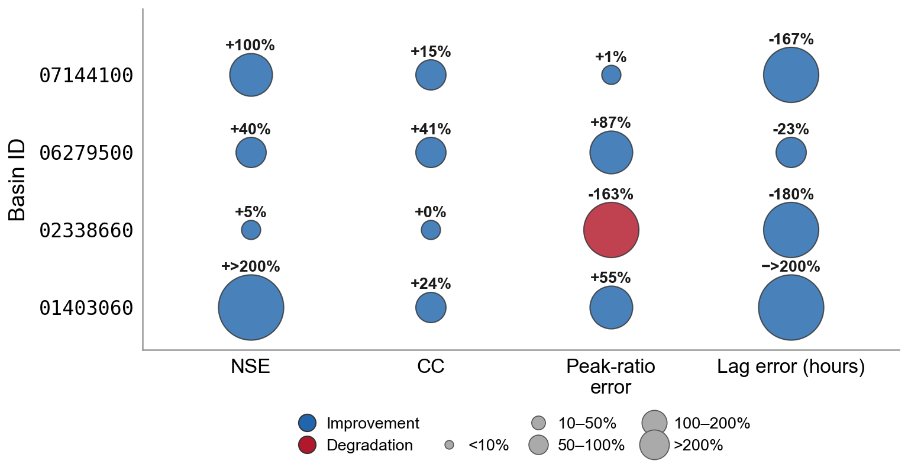
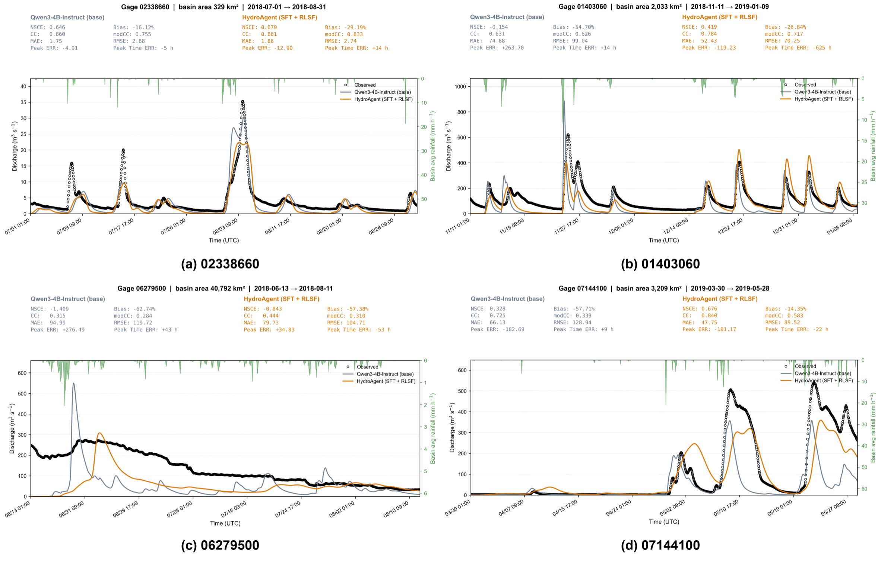
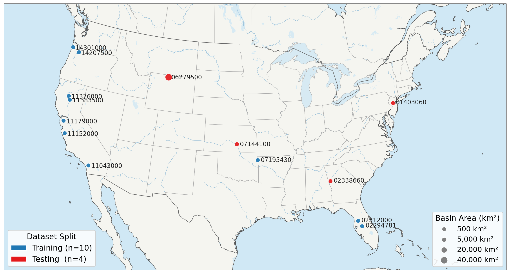

Abstract
Calibrating distributed hydrologic models is a critical bottleneck across operational water-resources management — streamflow prediction, water-supply assessment, reservoir operation, drought monitoring, infrastructure design, and flood forecasting all depend on it: each basin demands a domain expert to translate hydrograph signatures into adjustments of a high-dimensional parameter vector, and the resulting workflow does not transfer between watersheds. We ask a sharper version of a now-common question: can frontier large language model (LLM) agents replace the human hydrologic modeler, and if not, what would it take? We benchmark nine frontier LLM agents — Claude Opus 4.6/4.7, Sonnet 4.6, GPT-5/5.4/5.4-pro, and Gemini 2.5-pro/3.1-pro/3-flash — on the calibration of the operational CREST distributed hydrologic model used by the U.S. National Weather Service for flash-flood forecasting. Mean best-of-twenty-rounds Nash–Sutcliffe Efficiency (NSE) across four held-out gauges spanning 329–40,792 km2 ranges from −0.16 (GPT-5.4) to 0.75 (Sonnet 4.6); the ceiling is reproducible across all three frontier vendors and across capability tiers, and no model reaches the human-expert reference except for Opus-4.7 at one testing gauge. We argue this gap is not a parameter-count problem: it is a domain-grounding problem. We then propose HydroAgent, a recipe that fine-tunes the open-weight Qwen3-4B model with supervised fine-tuning on 2,576 expert calibration trajectories and Group-Relative Policy Optimization using NSE as a verifiable reward sourced from online CREST simulations — reinforcement learning with simulation feedback (RLSF). Our central thesis is that, for Earth-system science, a small domain-tuned policy with simulator-in-the-loop RL is a more compute-efficient and physically faithful path than scaling generic frontier models, and that the multi-modal richness of Earth data makes domain agents an unusually leveraged direction for AI in physical science.
Key Contributions
Frontier benchmark
The first systematic benchmark of nine frontier LLM agents on calibrating an operational distributed hydrologic model, with a public release of all 9 × 20 calibration trajectories for reproducibility.
HydroAgent recipe
A domain-specific recipe that fine-tunes Qwen3-4B with SFT + GRPO using NSE as a verifiable, simulator-grounded reward — reproducible on 4×H100.
A position, quantified
For Earth-system tasks with cheap-to-evaluate simulators, a domain-tuned 4B agent can substantially close the gap to frontier generalists — grounding, not scale, is the bottleneck.
Method: SFT + Reinforcement Learning with Simulation Feedback (RLSF)

A calibration episode exposes four tools to the agent — set_parameters (write 13 CREST
scalar multipliers), run_simulation (invoke the EF5 binary and parse the simulated-vs-observed
hydrograph), evaluate (return NSE plus a multi-criteria diagnostic), and a
parse_failure reasoning step. Training proceeds in two phases:
- Phase 1 — Supervised Fine-Tuning. Distill 2,576 expert calibration trajectories across 29 U.S. gauges into Qwen3-4B, teaching the tool-call grammar, parameter-bounds convention, and a basic hydrologic-reasoning style.
- Phase 2 — RLSF (GRPO). Draw K=8 multi-turn rollouts per prompt; each rollout proposes a parameter set, runs an online CREST/EF5 simulation, and is scored by a clipped NSE plus shaped per-turn signals. The simulator is the verifier — there is no learned reward model. An explicit improvement bonus trains the policy to iterate-until-you-cannot-improve, which is what a hydrologist actually does.
Training Recipe & Reproducibility
The RL stack is verl 0.5 GRPO with SGLang multi-turn rollouts and an
in-process EF5 tool, trained in full BF16 under FSDP (no LoRA) on
4×H100 (80 GB). For each prompt the engine draws K rollouts; each rollout is a
multi-turn calibration episode that dispatches set_parameters →
run_simulation → evaluate to registered tool classes, with EF5
invocations gated by a 32-way semaphore to avoid CPU/IO contention. A checkpoint cadence lands roughly
every 5 hours; resume_mode: auto recovers across Modal's 24 h function-timeout cycle.
| Setting | Value |
|---|---|
| Base model | Qwen/Qwen3-4B-Instruct-2507 (full FT, BF16, FSDP) |
| Advantage estimator | GRPO (group-relative, critic-free) |
| Rollouts per prompt (K) | 6–8 · batch = 4 prompts/step |
| Max calibration turns / rollout | 50 |
| Actor learning rate | 1×10−6 (5e−6 caused collapse) |
| KL anchor coeff. | 0.2 (strong anchor to SFT init) |
| Entropy coeff. | 0.01 |
| Sampling | temperature 1.0, top-p 0.95 |
| Epochs | 30 over the 10-gauge training set |
| Infrastructure | verl 0.5 + SGLang on 4×H100, EF5 concurrency 32 |
Full configs and the eval harness are in the code repository.
Where Do Frontier Agents Stand?
Each agent calibrates four held-out gauges inside an identical Linux sandbox, with a 20-round budget (up to 200 EF5 simulations per gauge). Best-NSE and rounds-used are tightly coupled: the strongest models use the full horizon, while several pro-tier reasoning models terminate after 1–2 rounds with budget remaining. Performance bands follow Moriasi et al. (2015); the dashed line at NSE = 0.85 is the human-expert reference (an experienced hydrologist using domain knowledge + the DREAM sampler). Use the carousel to browse all four held-out gauges.

Gauge 02338660 (329 km2) — the canonical evaluation gauge. No frontier
model crosses the human-expert reference at NSE = 0.85.

Gauge 01403060 — per-model best-NSE with rounds-used annotated on the right.

Gauge 06279500 (40,792 km2) — the largest, hardest basin; the one case
where Opus-4.7 reaches the human-expert reference.

Gauge 07144100 — the qualitative ranking and rounds-used/best-NSE coupling persist across
the panel.
How Does HydroAgent Improve Streamflow Prediction?

Relative change in four hydrologic-fit metrics for HydroAgent-4B versus the untuned
Qwen3-4B-Instruct baseline, on the four held-out gauges. Blue = improvement, red = degradation; size
encodes magnitude. Simulator-grounded post-training improves the metrics calibration is judged by:
NSE improves on all four basins (from +5% to over +200%), discharge correlation improves on
all four, and timing offset (|Lag|) contracts on all four. The lone residual cost is peak-ratio error on
gauge 02338660, consistent with the volume- and peak-weighted shaping of the RLSF reward.
Per-gauge ablation of the SFT + RLSF stack
| Gauge | Method | Best NSE | Sims | Turns | Parse fail |
|---|---|---|---|---|---|
07144100 | Baseline | 0.34 | 15 | 50 | 0 |
| SFT-only | 0.07 | 1 | 15 | 4 | |
| HydroAgent | 0.65 | 13 | 50 | 0 | |
06279500 | Baseline | −1.41 | 13 | 50 | 1 |
| SFT-only | −2.27 | 1 | 13 | 4 | |
| HydroAgent | −0.84 | 17 | 50 | 0 | |
02338660 | Baseline | 0.65 | 13 | 50 | 0 |
| SFT-only | −17.53 | 1 | 11 | 4 | |
| HydroAgent | 0.68 | 12 | 50 | 0 | |
01403060 | Baseline | −0.15 | 16 | 50 | 0 |
| SFT-only | 0.58 | 4 | 16 | 4 | |
| HydroAgent | 0.40 | 14 | 50 | 0 |
Higher NSE is better. SFT alone is unstable; the full SFT + RLSF stack restores long-horizon iteration and zero parse failures.
Calibrated Hydrographs

Observed (black) versus simulated discharge for HydroAgent-4B (orange) and the Qwen3-4B baseline (gray) across the four held-out gauges, with precipitation forcing shown on the inverted top axis. Simulator-grounded RL aligns event peaks and timing while stabilizing volume across distinct hydroclimatic regions.
Benchmark Basins

Ten CONUS training gauges (539–2,401 km2) and four geographically held-out testing gauges (329–40,792 km2), spanning distinct hydroclimatic regions, hourly forcings (MRMS gauge-corrected precipitation, daily PET), and 13 calibrated CREST parameters. Each window is a clear flood event (rising + receding limbs) selected by a flood-window audit over the observation series.
Training set (10 gauges)
| Gauge ID | Basin (km²) | Lat | Lon | Window (UTC) |
|---|---|---|---|---|
11383500 | 539 | 40.014 | −121.948 | 2018-05-19 → 07-17 |
11043000 | 575 | 33.480 | −117.144 | 2019-03-15 → 05-13 |
11152000 | 632 | 36.281 | −121.323 | 2018-05-29 → 07-27 |
02294781 | 1,064 | 27.825 | −81.802 | 2018-04-29 → 06-27 |
02312000 | 1,476 | 28.480 | −82.178 | 2018-11-15 → 01-13 |
07195430 | 1,489 | 36.109 | −94.533 | 2018-01-04 → 03-04 |
11179000 | 1,639 | 37.587 | −121.961 | 2018-06-03 → 08-01 |
14301000 | 1,727 | 45.704 | −123.755 | 2018-09-11 → 11-09 |
14207500 | 1,828 | 45.351 | −122.676 | 2018-04-09 → 06-07 |
11376000 | 2,401 | 40.387 | −122.239 | 2018-09-21 → 11-19 |
Testing set (4 held-out gauges)
| Gauge ID | Basin (km²) | Lat | Lon | Window (UTC) |
|---|---|---|---|---|
02338660 | 329 | 33.236 | −84.988 | 2018-07-01 → 08-31 |
01403060 | 2,033 | 40.551 | −74.548 | 2018-11-11 → 01-09 |
06279500 | 40,792 | 44.759 | −108.182 | 2018-06-13 → 08-11 |
07144100 | 3,209 | 37.883 | −97.425 | 2019-03-30 → 05-28 |
Acknowledgement
We appreciate Modal for sponsoring the computing credits for this research. The code is released under the MIT license; see the project repository for training, evaluation, and data-preparation scripts.
BibTeX
@article{li2026hydroagent,
title = {HydroAgent: Closing the Gap Between Frontier LLMs and Human Experts
in Hydrologic Model Calibration via Simulator-Grounded RL},
author = {Li, Zhi and Yan, Songkun and Cao, Jie and Zhang, Mofan
and Yoo, Jinwoong and Hong, Yang},
year = {2026},
url = {https://chrimerss.github.io/HydroAgent/}
}